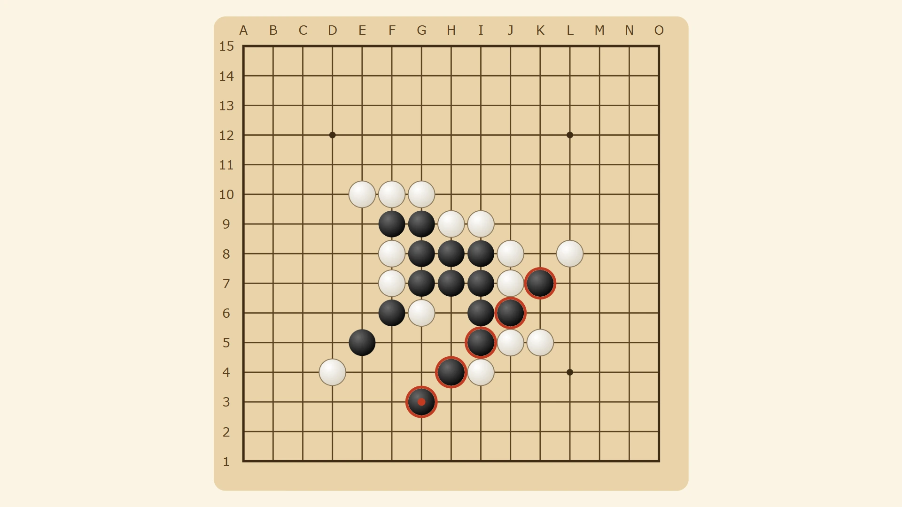
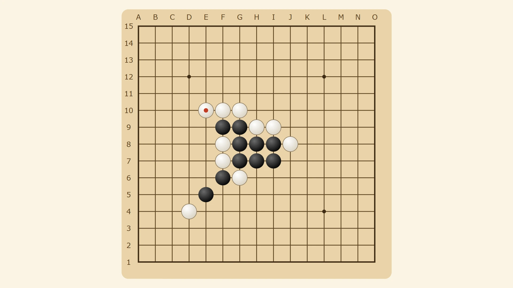

Gomowise — free Gomoku online, five in a row
Gomoku in your browser: play the computer at three levels, a friend on the same device, or a friend anywhere with a link.


How to play Gomoku
Gomoku is played on a board of 15 by 15 lines. Two players take turns placing one stone on an empty point where two lines cross. Black moves first. Stones never move and are never taken.
The first player to get five stones in a row wins: across, down or diagonally. If the board fills up and nobody has five, the game is a draw.
Three ways to play
Vs computer has three levels. Easy takes any win it can see but misses some of your threats. Medium blocks every four. Hard looks three moves ahead and answers an open three before it becomes a problem. You choose to play Black or White.
Two players is one device passed back and forth, for playing side by side.
Friend online opens a room. Send the link, or read out the six-letter code for your friend to type. The host plays Black first, and each rematch swaps the colours. Nobody needs an account.
Freestyle, omok and caro rules
Gomoku is played with different house rules around the world, and Gomowise has three:
- Freestyle: five or more in a row wins. This is the default.
- Omok, the Korean rules: only exactly five wins; six or more does not count. Neither player may place a stone that makes two open threes at once (a double-three). Korean pages start on these rules.
- Caro, the Vietnamese rules: five or more wins, unless the opponent has already blocked both ends of the line. The edge of the board does not count as a block. Vietnamese pages start on these rules.
Tips for winning
Play near the centre early: a stone there can join lines in every direction. An open three (three in a row with both ends empty) must be answered, or it becomes an open four, which cannot be stopped. The strongest attack makes two threats with one stone, such as a four and an open three, so your opponent can only block one.
Mouse, touch or keyboard
With a mouse, click a point to place a stone. On a touch screen, tap once to see where the stone will go and tap again to place it, so a slip of the finger never costs a game. With a keyboard, the arrow keys move around the board and Enter or Space places a stone.
More board games
For more two-player games against the computer or a friend, try Rookwise (chess), Jumpwise (checkers) or Pawnrush (ludo). For a puzzle on your own, Sweepwise is classic Minesweeper.
More like this: 2-player games online · Multiplayer browser games · Board games with friends